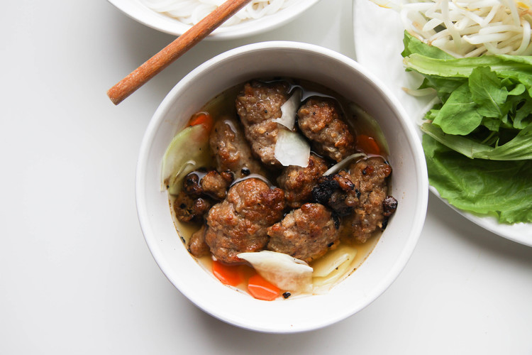

Bun Cha HaNoi

DESCRIPTION
From the name, Bun Cha Hanoi originated in Hanoi, Vietnam. After Pho, Bun Cha is one of Hanoi's famous dishes.
INGREDIENTS
- Ground pork
- Pork shoulder
- Fish sauce
- Oyster sauce
- Homemade caramel cooking sauce (Nuoc Mau)
- Chicken stock powder
- Granulated sugar
- Ground pepper
- Minced lemongrass
- Minced garlic
- Assorted vegetables (lettuce, bean sprouts, mint, perilla, and/or sliced cucumber)
- Pickled daikon and carrot
Sweet Chili Papaya Dipping Sauce
- Unripe green papaya
- Salt
- Hot water
- Granulated sugar
- Fish sauce
- Lime juice
- Garlic cloves
- Thai chili peppers
INSTRUCTION
- To make the pork marinade, combine fish sauce, oyster sauce, caramel cooking sauce/thick soy sauce, pork/vegetable stock powder, sugar, ground pepper, lemongrass and garlic. Mix well. Divide marinade between the ground pork and sliced pork shoulder. Marinate the pork for at least 30 minutes or overnight in fridge for better flavor.
- Roll the ground pork into small patties.
- Grill the sliced pork and patties over charcoal fire for a more authentic taste. You can also bake them in the oven at 400°F for about 10 minutes. Make sure to flip and rotate for even cooking.
- To make the dipping sauce, in a small bowl, combine the sliced papaya and salt. Let sit for at least 30 minutes. Rinse the salt off under cold running water and squeeze out excess water. Drain dry and set aside. In a medium-size bowl, mix together water and sugar until dissolved. Add fish sauce, lime juice, coconut soda, garlic and chili peppers. Add sliced papaya to sauce.
- Cook the noodles per package instructions.
- To serve, add a single portion of meat to a small bowl. Add the sweet papaya chili sauce on the meat. Serve with a side of rice noodles and platter of fresh Vietnamese vegetables and herbs.